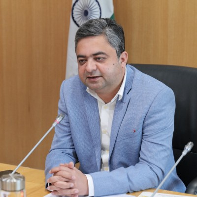
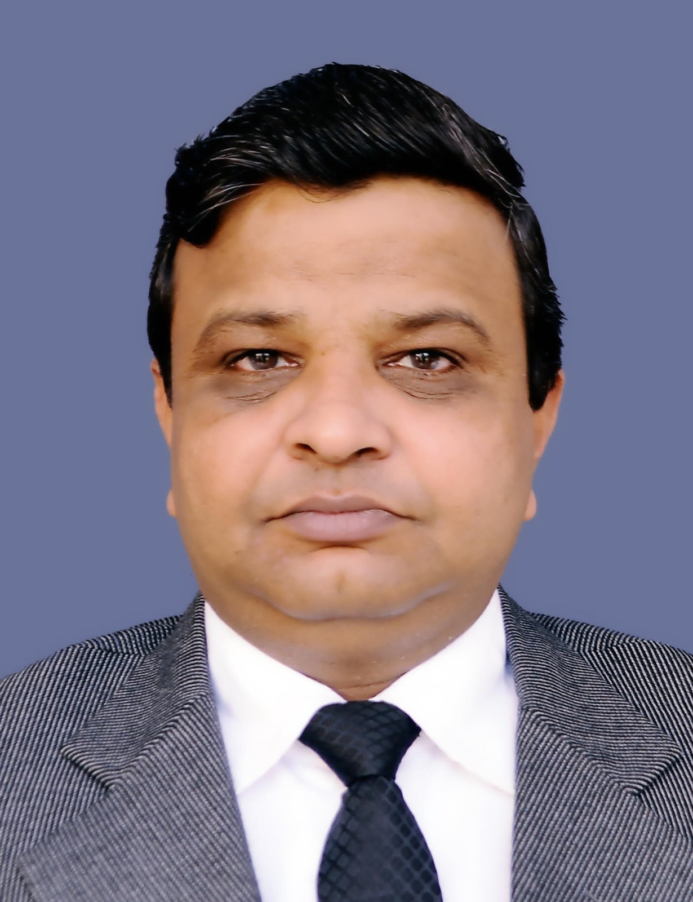
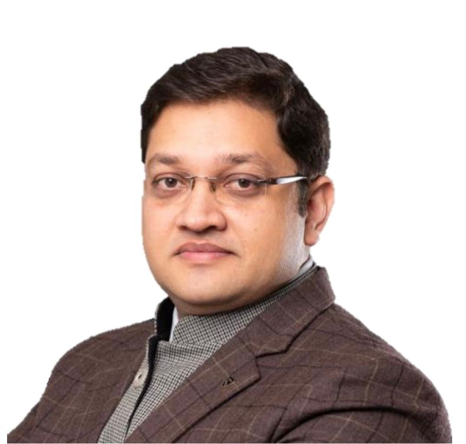
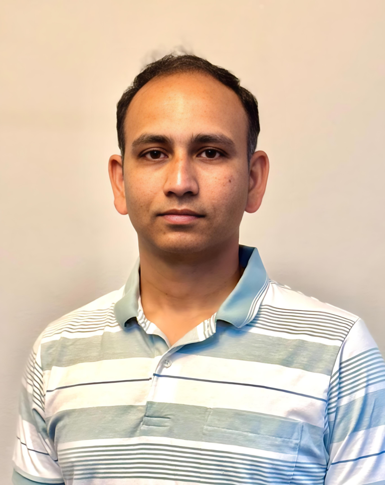
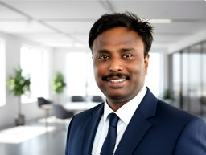
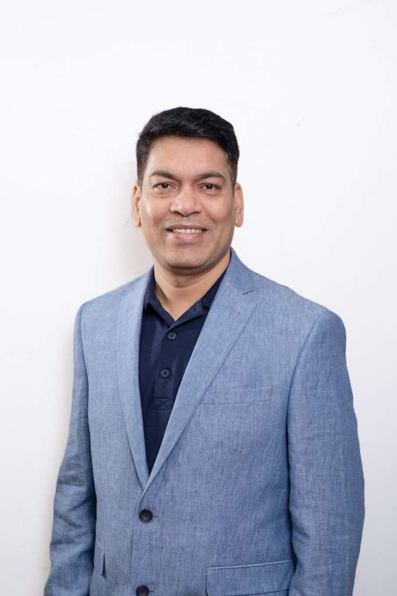
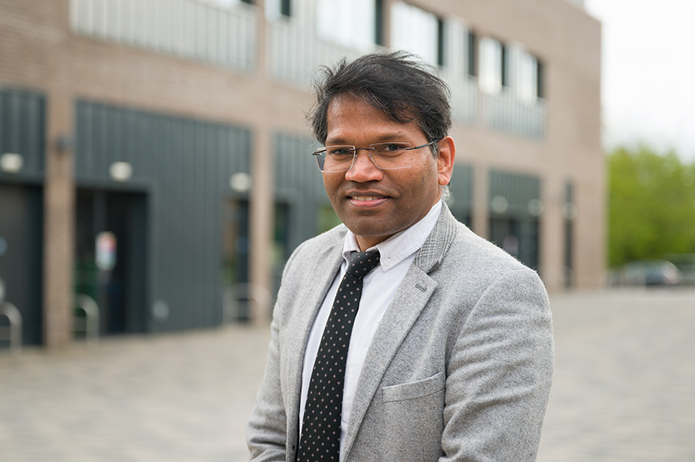

Dignitaries
Meet the esteemed dignitaries of I3CSET-2026

CHIEF GUEST
Dr. Mohammad Rihan
Professor, Department of Electrical Engineering, AMU
Director General of the National Institute of Solar Energy (NISE) under the Ministry of New and Renewable Energy, Government of India

GUEST OF HONOUR
Prof. Asheesh Kumar Singh
Department of Electrical Engineering Motilal Nehru National Institute of Technology, Prayagraj, U.P, India

GUEST OF HONOUR
Mr. Gaurav Kansal
Head of Train and Stations Operations, DB RRTS, UP
Speakers
Meet the esteemed speakers of I3CSET-2026
MR. SATISH KABADE
IEEE Senior Member
Satish Kabade is a pioneering leader in pension technology, known for transforming outdated pension infrastructures into agile, AI-driven systems. His work integrates artificial intelligence, machine learning, and cloud-native architectures to enhance efficiency, security, and transparency across the retirement sector. He has achieved measurable improvements, such as a 63% reduction in infrastructure costs and significant gains in fraud detection accuracy. His ethical approach to innovation—embedding explainability, privacy, and compliance—demonstrates a deep understanding of both technology and regulatory demands. Through research, mentorship, and impactful implementations, he has set new benchmarks for operational excellence and responsible technological advancement in the financial services industry.

DR. KELVIN ANOH
University of Chichester, Bognor Regis Campus, United Kingdom
Dr Kelvin Anoh is a Senior Lecturer in Electrical and Electronic Engineering and Computing at the University of Chichester, Bognor Regis Campus, United Kingdom. He is the Programme Leader of the Electrical and Electronic Engineering programme. Dr Anoh is also the Research Centre Head of the Centre for Future Technologies. His research and teaching activities include Smart Infrastructure, Smart Energy Cities, Renewable Energy & Sustainability, Engineering System Modelling and Simulation, Optimisation, Machine Learning and Artificial Intelligence, and Business Models.

MR. RAKESH CHARLA
Senior Software Engineer - Excellence in technology and specialize in product analytics, Cloud Platform & Solutions | Security | Data & AI & ML
Rakesh Charla is a Senior Software Engineer within Microsoft Security, designs and delivers scalable, AI-driven security solutions that unify detection, investigation, and response across Microsoft 365 and Azure ecosystems. Enhanced Microsoft’s extended detection and response capabilities through deep integration of telemetry from Microsoft Defender for Servers. Endpoint and Entra ID protection. Contributed to advanced threat correlation across hybrid environments, building analytics rules and connectors, and supports posture management within Microsoft Security. Plays key role in driving Microsoft’s Zero Trust strategy by enabling faster detection, reduced alert fatigue, and stronger threat response across enterprise systems.

Mr. SATHISH KRISHNA ANUMULA
Business & Enterprise Architect for Digital Transformations | SCRS - Dis.Fellow | Fellow IETE | Fellow Raptor |Sr. IEEE Member
Sathish Krishna Anumula is a seasoned Digital Transformation Architect and Technology Strategist with 22+ years of experience advancing Closed Loop Manufacturing, including PLM, supply chain, and smart factory solutions. He has worked across automotive, medical devices, semiconductors, and hi-tech electronics, combining strong technical depth with business-driven strategy. He has contributed to major global initiatives at Siemens, Microsoft, and IBM, leading the architecture, design, and deployment of complex enterprise systems, and promoting sustainable and efficient manufacturing practices. His expertise spans enterprise architecture, hybrid cloud, IIoT, and AI/ML for industrial applications, along with emerging fields such as quantum and neuromorphic computing. Sathish is also a published author of textbooks and research papers, an active reviewer for reputed journals, and a frequent keynote speaker recognized for his thought leadership in digital manufacturing innovation.

Mr. AJIT KUMAR SAHU
Engineering Director | Current Location: Santa Clara, California, United States
Ajit Sahu is a senior Engineering Leader and AI Innovator with 16+ years of experience building high-performance engineering teams and delivering secure, scalable platforms. As Director of Engineering at Data Safeguard Inc., he leads strategy for ID-PRIVACY®, the leading enterprise privacy platform powered by Responsible & Ethical AI. Previously, Ajit held key roles at Walmart Global Tech, Citi, Apple, and Wipro, driving digital transformation and AI adoption at global scale. An IEEE Senior Member and Forbes Tech Council contributor, he focuses on Generative AI, Agentic Systems, and Privacy Engineering — shaping how enterprises build trust in the age of AI.

DR. OMPRAKASH KAIWARTYA
Associate Professor (Networks & Cybersecurity for CAV)
Dr. Omprakash Kaiwartya is an Associate Professor (Networks & Cybersecurity for CAV) and PhD (PGR) Research Coordinator at the Department of Computer Science. He is also the Research Talk/Seminar Co-ordinator of the department. He was also the Course Leader for MSc Engineering Electronics and Cybernetics & Communication (2018-2024). He teaches Embedded Systems and Group Design Projects modules in MSc and Internet/Systems Technology, and Networks and Security modules in BSc.
Dr. RAHUL KUMAR
Senior Lecturer in Electrical and Electronic Engineering
Dr. Rahul Kumar is a Senior Lecturer in Electrical & Electronic Engineering at the University of Chichester, UK . He holds a PhD in Optics from Northumbria University and specializes in sensor technology—particularly optical fibre sensors for environmental monitoring—while also exploring AI applications in engineering education.

Dr. KASHIF NISAR
The University of Notre Dame Australia, Sydney Campus
Dr Kashif Nisar, PhD, SMIEEE, is Lecturer in Computer Science and National Course Coordinator (Sydney & Fremantle Campuses) at the School of Arts & Sciences, The University of Notre Dame Australia (Sydney campus). He is a Senior Member of the Institute of Electrical and Electronics Engineers (IEEE) and active member of the Australian Computer Society (ACS), Association for Computing Machinery (ACM) and Internet Society (ISOC-USA). His teaching spans computer science fundamentals, cybersecurity and artificial intelligence modules, and his administrative duties include coordinating national-level course delivery across campuses.